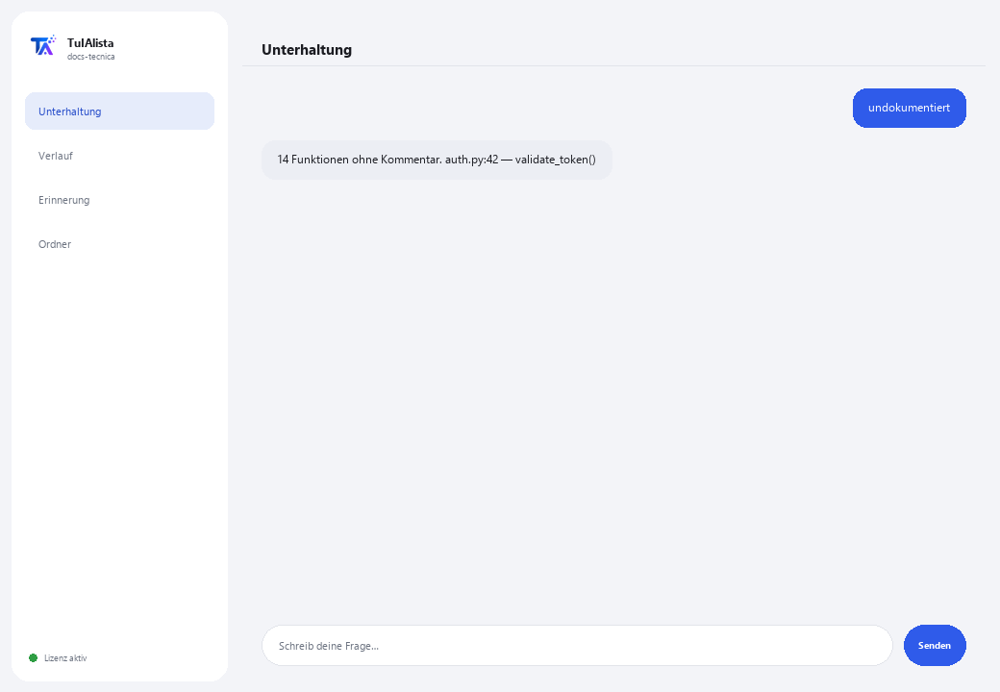

Agent für technische Dokumentation
Erstellt und pflegt die technische Dokumentation Ihrer Software aus Ihrem eigenen Code, ohne dass der Code Ihr Gerät verlässt.
Was löst er und was brauchen Sie?
Dokumentation hinkt immer hinterher: niemand hat Zeit, die README zu schreiben, zu erklären, was jede Datei tut, oder eine FAQ zu pflegen. Dieser Agent scannt Ihr Projekt und erledigt das für Sie — unterstützt Python, JS/TS, Java, C/C++, Go, PHP, Ruby, SQL, sowie RPG (AS/400/IBM i) und COBOL.
- Sie brauchen: Ihren Lizenzschlüssel (TIA-XXXX-XXXX-XXXX-XXXX) und den Projektordner. Kein Python, keine technischen Kenntnisse zur Installation (obwohl er für Entwicklungsteams gedacht ist).
- Erstes Ergebnis in weniger als 5 Minuten: Sie installieren, aktivieren, wählen Ihren Ordner und führen readme aus, um Ihre erste generierte README zu erhalten.
- Ihr Quellcode verlässt nie Ihren Computer — das Scannen läuft lokal.
soporte@tuialista.com oder besuche tuialista.com/soporte — wir antworten normalerweise am selben Werktag.1 Was dieser Agent tut
Sie zeigen ihm den Projektordner und er:
- Scannt den Code und extrahiert seine Struktur (Funktionen, Klassen, Kommentare, Imports).
- Erstellt eine professionelle README des Projekts (Struktur, Komponenten, Abhängigkeiten, Verwendung).
- Dokumentiert eine bestimmte Datei im Detail (Zweck, Funktionen, Parameter, Notizen).
- Erstellt eine technische FAQ mit Fragen und Antworten basierend auf dem Code.
- Erkennt undokumentierte Funktionen und Klassen.
- Erstellt eine Abhängigkeitskarte zwischen Dateien (intern und extern).
- Beantwortet freie Fragen zum Code.
Unterstützt viele Sprachen: Python, JavaScript/TypeScript, Java, Kotlin, C/C++, Go, PHP, Ruby, SQL, sowie RPG (AS/400/IBM i) und COBOL, unter anderem.
2 Installation (2 Minuten)
Für Windows. Keine dauerhafte Internetverbindung nötig, nichts wird in die Cloud hochgeladen.
Laden Sie das Installationsprogramm von tuialista.com/descargar herunter (Agent für technische Dokumentation) und öffnen Sie es. Es erstellt eine Verknüpfung mit dem Logo auf Ihrem Desktop — kein Python oder Terminal erforderlich.
Doppelklicken Sie auf das neue Symbol. Fügen Sie Ihren Lizenzschlüssel ein (er wurde Ihnen beim Kauf per E-Mail zugesandt) und klicken Sie auf Aktivieren. Sie sehen ein grünes Häkchen, wenn er gültig ist.
Wählen Sie den Projektordner aus und klicken Sie auf Agent jetzt verwenden. Beim nächsten Mal startet er direkt — er merkt sich Ihren Schlüssel und Ihren Ordner.
3 So verwenden Sie ihn
Der Agent öffnet ein Chat-Fenster, wie eine Messaging-App — kein schwarzer Programmierer-Bildschirm. Sie schreiben Ihren Befehl oder Ihre Frage in das Textfeld unten, klicken auf Senden (oder Enter), und die Antwort erscheint als Nachricht, genau wie auf diesem echten Bild:

Die folgenden Befehle sind die Wörter, die Sie in dasselbe Textfeld eingeben können:
> readmeProfessionelle README.md mit Name, Struktur, Hauptkomponenten, wie sie zusammenhängen, Abhängigkeiten und Nutzungsanweisungen.
> faq8 bis 12 technische FAQ (Architektur, wie etwas funktioniert, wie man Funktionalität ändert...) mit Antworten basierend auf Ihrem Code.
> dokumentieren <Datei>Detaillierte Dokumentation einer Datei: Zweck, jede Funktion/Prozedur (was sie tut, Parameter, Rückgabe), Abhängigkeiten und Notizen.
> undokumentiertFunktionen und Klassen ohne Kommentare oder Docstring, mit Datei und Zeile.
> AbhängigkeitenAbhängigkeitskarte: pro Datei, welche internen Projektmodule und welche externen Bibliotheken sie verwendet.
> analysieren <Datei>Erkannte Struktur einer Datei (Klassen, Funktionen mit ihrer Zeile, Imports) ohne KI aufzurufen.
> freie Frage?Schreiben Sie jede Frage in natürlicher Sprache, z. B.: wo wird das Sitzungstoken validiert?
> beendenBeendet die Sitzung (funktioniert auch mit exit).
4 Beispiele für häufige Anwendungen
Ein neues Projekt dokumentieren
readme → faq
Eine geerbte Datei verstehen
analysieren legacy/prozess.cbl → dokumentieren legacy/prozess.cbl — funktioniert sogar mit COBOL oder RPG von AS/400-Systemen.
Die Dokumentationslücken überprüfen
undokumentiert
Sich im Code orientieren
wie verbindet sich die Anwendung mit der Datenbank?
5 Häufig gestellte Fragen
Wird mein Code ins Internet hochgeladen?
Welche Sprachen unterstützt er?
Muss ich zusätzliche Bibliotheken installieren?
Überspringt er Ordner wie node_modules?
Verändert er meinen Code oder schreibt Dateien?
Wie groß kann das Projekt sein?
Funktioniert er für AS/400-Code (RPG/COBOL)?
In welcher Sprache antwortet er?
Ist die Dokumentation 100 % korrekt?
Kann ich eine einzelne Datei dokumentieren, ohne alles zu scannen?
6 Problemlösung
Zeigt “0 indizierte Dateien”
Findet eine Datei mit dokumentieren/analysieren nicht
Die README ignoriert einige Dateien
Zeigt “Lizenz ungültig” oder fordert erneute Verbindung
“Keine KI-Anbieter konfiguriert”
Keine dieser Lösungen hat Ihr Problem behoben? Schreiben Sie uns direkt — wir schauen es uns gerne gemeinsam mit Ihnen an.
soporte@tuialista.com oder besuche tuialista.com/soporte — wir antworten normalerweise am selben Werktag.7 Datenschutz und Vertraulichkeit
Ihr Quellcode verlässt nie Ihren Computer.
- Der Agent scannt das Projekt und extrahiert seine Struktur lokal, auf Ihrem eigenen Gerät. Er lädt Ihren Code auf keinen Server hoch.
- Die Strukturerkennung, die Dokumentationslücken (undokumentiert) und die Abhängigkeitskarte werden auf Ihrem Gerät berechnet.
- Das Einzige, was über das Internet läuft, ist: (1) eine Überprüfung, dass Ihre Lizenz aktiv ist — die Ihren Code nicht enthält —, und (2) beim Generieren von README, FAQ, Dokumentieren einer Datei oder Beantworten einer Frage werden Code-Fragmente (die relevantesten) an die KI-Engine gesendet, um den Text zu verfassen.